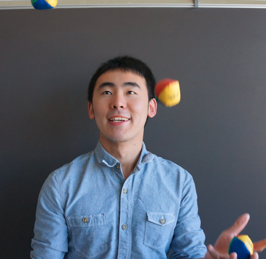

Wenlin Wang (王文麟)
|  |
I received my Ph.D. degree from Duke University in summer 2019, advised by Prof. Lawrence Carin. Before joining Duke, I earned M.S. degree from Washington University in St. Louis and B.Eng. degree from University of Science and Technology of China in 2015 and 2013, respectively. My primary research interests include Statistical Machine Learning and Deep Learning. Currently I am developing machine learning models for various real-world problems, such as natural language processing, computer vision and data mining. E-mail: wlwang616 AT gmail dot com |
Publication
|
• Graph-Driven Generative Models for Heterogeneous Multi-Task Learning [PDF] Wenlin Wang, Hongteng Xu, Zhe Gan, Bai Li, Guoyin Wang, Liqun Chen, Qian Yang, Wenqi Wang and Lawrence Carin Proc. AAAI Conference on Artificial Intelligence (AAAI), 2020 Workshop on Graph Representation Learning, Neural Information Processing Systems (NeurIPS), 2019 • Sequence Generation with Optimal-Transport-Enhanced Reinforcement Learning [PDF] Liqun Chen, Ke Bai, Chenyang Tao, Yizhe Zhang, Guoyin Wang, Wenlin Wang, Ricardo Henao and Lawrence Carin Proc. AAAI Conference on Artificial Intelligence (AAAI), 2020 • Improving Textual Network Learning with Variational Homophilic Embeddings [PDF] Wenlin Wang, Chenyang Tao, Zhe Gan, G. Wang, L. Chen, X. Wang, R. Zhang, Q. Yang, R. Henao and L. Carin Neural Information Processing Systems (NeurIPS), 2019 • Ouroboros: On Accelerating Training of Transformer-Based Language Models [PDF] Qian Yang, Zhouyuan Huo, Wenlin Wang, Heng Huang, Lawrence Carin Neural Information Processing Systems (NeurIPS), 2019 • Certified Adversarial Robustness with Addition Gaussian Noise Bai Li, Changyou Chen, Wenlin Wang, Lawrence Carin Neural Information Processing Systems (NeurIPS), 2019 • An End-to-End Generative Architecture for Paraphrase Generation [PDF] Qian Yang, Zhouyuan Huo, Dinghan Shen, Yong Cheng, Wenlin Wang, Guoyin Wang and Lawrence Carin Conference on Empirical Methods in Natural Language Processing (EMNLP), 2019 • Improving Textual Network Embedding with Global Attention via Optimal Transport [PDF] L. Chen, G. Wang, C. Tao, D. Shen, P. Cheng, X. Zhang, Wenlin Wang, Y. Zhang and L. Carin Annual Meeting of the Association for Computational Linguistics (ACL), 2019 • Topic-Guided Variational Auto-Encoder for Text Generation [PDF] (Oral) Wenlin Wang, Zhe Gan, Hongteng Xu, Ruiyi Zhang, Guoyin Wang, Dinghan Shen, Changyou Chen and Lawrence Carin Conference of the North American Chapter of the Association for Computational Linguistics (NAACL), 2019 • A Convergence Analysis For a Class of Practical Variance-reduction Stochastic Gradient MCMC [PDF] Changyou Chen, Wenlin Wang, Yizhe Zhang, Qinliang Su, Lawrence Carin Science China Information Science, vol.62 , 2019 • InverseNet: Solving Inverse Problems of Multimedia Data with Splitting Networks [PDF] Qi Wei, Kai Fan, Wenlin Wang, Tianhang Zheng, Chakraborty Amit, Katherine Heller, Changyou Chen, Kui Ren IEEE International Conference on Multimedia and Expo (ICME), 2019 • Distilled Wasserstein Learning for Word Embedding and Topic Modeling [PDF] Hongteng Xu, Wenlin Wang, Wei Liu, Lawrence Carin Neural Information Processing Systems (NeurIPS), 2018 • Topic Compositional Neural Language Model [PDF][Poster] Wenlin Wang, Zhe Gan, Wenqi Wang, Dinghan Shen, Jiaji Huang, Wei Ping, Sanjeev Satheesh, Lawrence Carin Artificial Intelligence and Statistics (AISTATS), 2018 • Continuous-Time Flows for Deep Generative Models [PDF] Changyou Chen, Chunyuan Li, Liqun Chen, Wenlin Wang, Yunchen Pu, Lawrence Carin International Conference on Machine Learning (ICML), 2018 • Joint Embedding of Words and Labels for Text Classification [PDF] Guoyin Wang, Chunyuan Li, Wenlin Wang, Yizhe Zhang, Dinghan Shen, Xinyuan Zhang, R. Henao, Lawrence Carin Annual Meeting of the Association for Computational Linguistics (ACL), 2018 [Code] • Baseline Needs More Love: On Simple Word-Embedding-Based Models and Associated Pooling Mechanisms [PDF] Dinghan Shen, Guoyin Wang, Wenlin Wang, M.R. Min, Qinliang Su, Yizhe Zhang, Ricardo Henao, Lawrence Carin Annual Meeting of the Association for Computational Linguistics (ACL) , 2018 [Code] • NASH: Toward End-to-End Neural Architecture for Generative Semantic Hashing [PDF] (Oral) Dinghan Shen, Qinliang Su, P. Chapfuwa, Wenlin Wang, Guoyin Wang, Ricardo Henao, Lawrence Carin Annual Meeting of the Association for Computational Linguistics (ACL), 2018 Best Long Paper Award, Honorable Mention: 6/1018, 0.6% [Link] • Zero-Shot Learning via Class-Conditioned Deep Generative Models [PDF][Slides] (Oral) Wenlin Wang, Yunchen Pu, Vinay Kumar Verma, Kai Fan, Yizhe Zhang, Changyou Chen, Piyush Rai, Lawrence Carin Proc. AAAI Conference on Artificial Intelligence (AAAI), 2018 • A Unified Particle-Optimization Framework for Scalable Bayesian Sampling [PDF](Oral) Changyou Chen, Ruiyi Zhang, Wenlin Wang, Bai Li, Liqun Chen, Lawrence Carin The Conference on Uncertainty in Artificial Intelligence (UAI), 2018 • Wide Compression: Tensor Ring Nets [PDF] Wenqi Wang, Yifan Sun, Brian Eriksson, Wenlin Wang, Vaneet Aggarwal IEEE Conference on Computer Vision and Pattern Recognition (CVPR), 2018
• Deep Metric Learning with Data Summarization [PDF] |
Workshops & Preprints
|
• Collaborative Filtering with A Synthetic Feedback Loop [PDF] Wenlin Wang, Hongteng Xu, Ruiyi Zhang, Wenqi Wang, Lawrence Carin • An Optimal Transport Framework for Zero-Shot Learning [PDF] Wenlin Wang, Hongteng Xu, Guoyin Wang, Wenqi Wang, Lawrence Carin Workshop on Optimal Transport on Machine Learning, Neural Information Processing Systems (NeurIPS), 2019 • Nested-Wasserstein Self-Imitation Learning for Sequence Generation [PDF] Ruiyi Zhang, Changyou Chen, Zhe Gan, Zheng Wen, Wenlin Wang, Chenyang Tao, Lawrence Carin Workshop on Deep Reinforcement Learning, Neural Information Processing Systems (NeurIPS), 2019 • Sequence Generation with Guider Network [PDF] Ruiyi Zhang, Changyou Chen, Zhe Gan, Wenlin Wang, Liqun Chen, Dinghan Shen, Guoyin Wang, Lawrence Carin Workshop on Uncertainty & Robustness in Deep Learning, Internatial Conference on Machine Learning (ICML), 2019 • On Norm-Agnostic Robustness of Adversarial Training [PDF] Bai Li, Changyou Chen, Wenlin Wang, Lawrence Carin Workshop on Real-world Sequential Decision Making, Internatial Conference on Machine Learning (ICML), 2019 • Earliness-Aware Deep Convolutional Networks for Early Time Series Classification [PDF] Wenlin Wang, Changyou Chen, Wenqi Wang, Piyush Rai, Lawrence Carin |